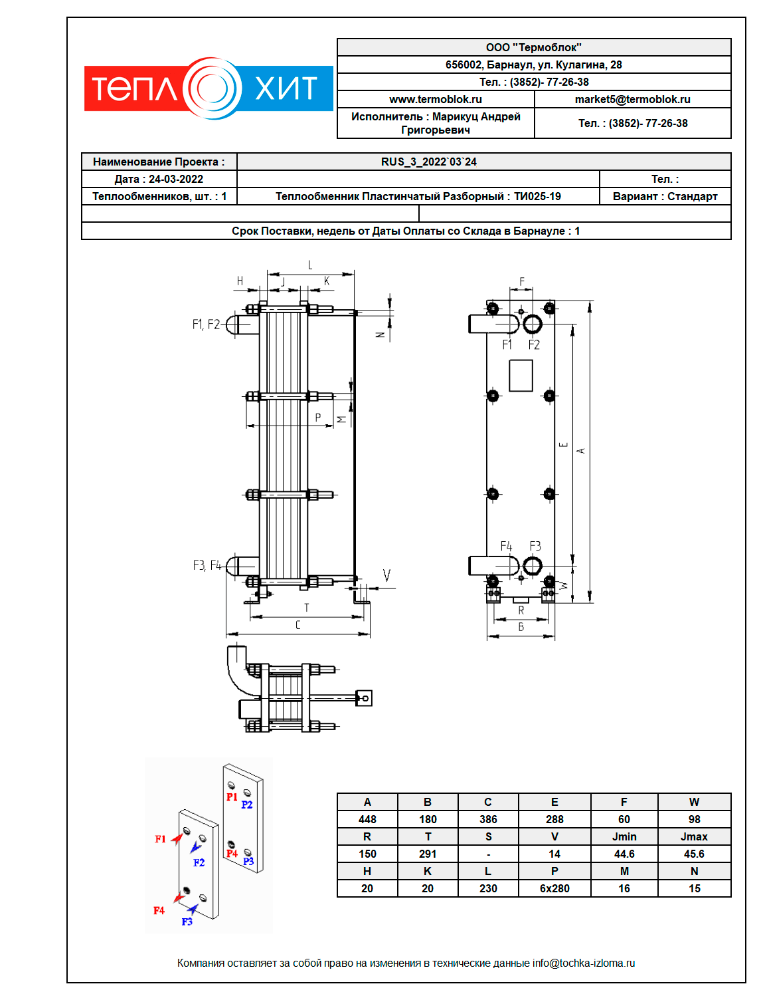

Теплообменное оборудование для бассейна можно выделить в отдельное направление среди всех систем водоснабжения и водоподготовки. В таких системах используются различные схемы подключения и виды теплообменных аппаратов. Существуют фирмы, специализирующиеся на производстве только теплообменников для басейна. В данной статье мы рассажем о пластинчатых разборных теплообменниках, которые используются для обогрева бассейна.
Нагрев воды при заполнении чаши бассейна - наиболее жесткий режим работы теплообменника, особенно, если весь бассейн нужно нагреть за короткое время (к примеру, чашу за 2 часа).
Подогрев воды до необходимой температуры в постоянном режиме. После нагрева бассейна происходит постоянная циркуляция воды из чаши через теплообменник. Для теплообменника это мягкий режим, вся его мощность не используется.
Пример теплообменника на бассейн 15 м3 открытого типа 100 кВт. Теплообменники для бассейна пластинчатого типа подбираются индивидуально. Инженер по подбору рассчитает теплообменный аппарат необходимой мощности, подскажет на сколько надо увеличить расход по нагреваемой среде в случае, если бассейн открытый.
Расход теплообменника считается под максимальный режим, то есть какой объем бассейна нужно нагреть и за какое время. Для открытого бассейна учитывается количество тепла, который бассейн может терять во время нагрева (расход теплообменника в таком случае может кратно превышать нормальное значение).

Вместе со спецификацией мы выдаем коммерческое предложение со сборочным чертежем. В нем указана стоимость, срок изготовления, размеры агрегата. Также тип и порты: в данном случае теплообменник подогрева бассейна одноходовой и порты можно увидеть в левом нижнем углу (F1, F2, F3, F4).
